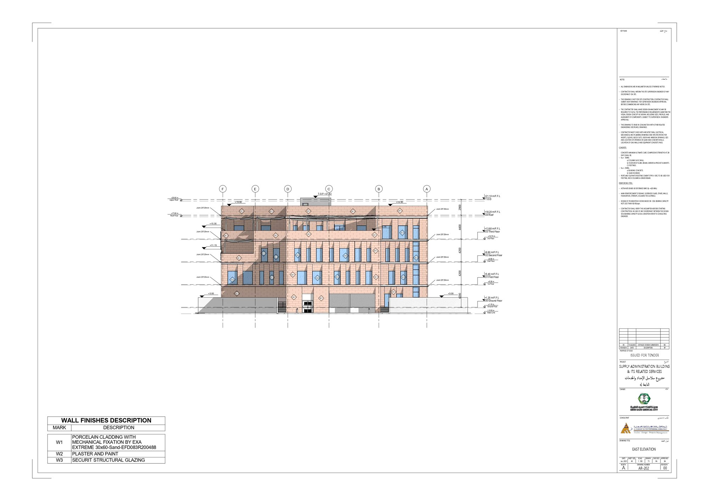
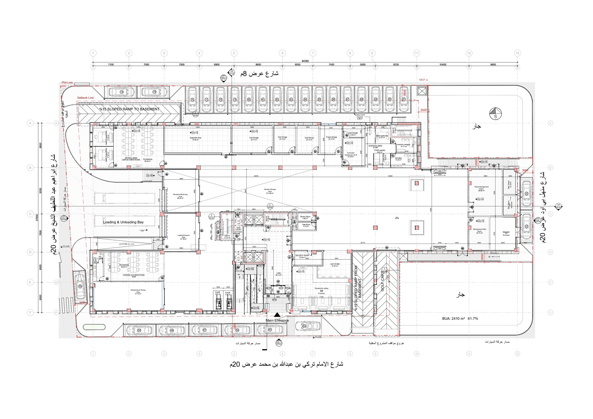
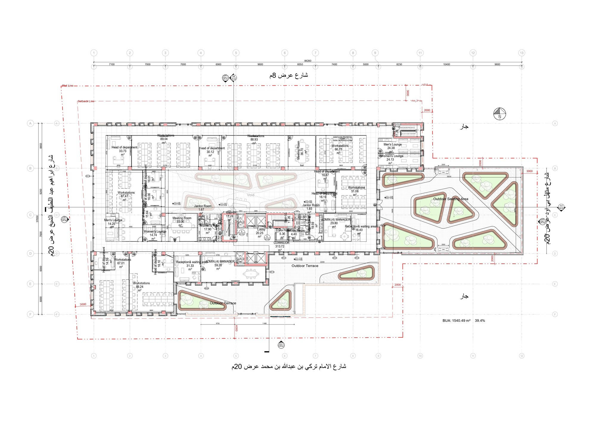
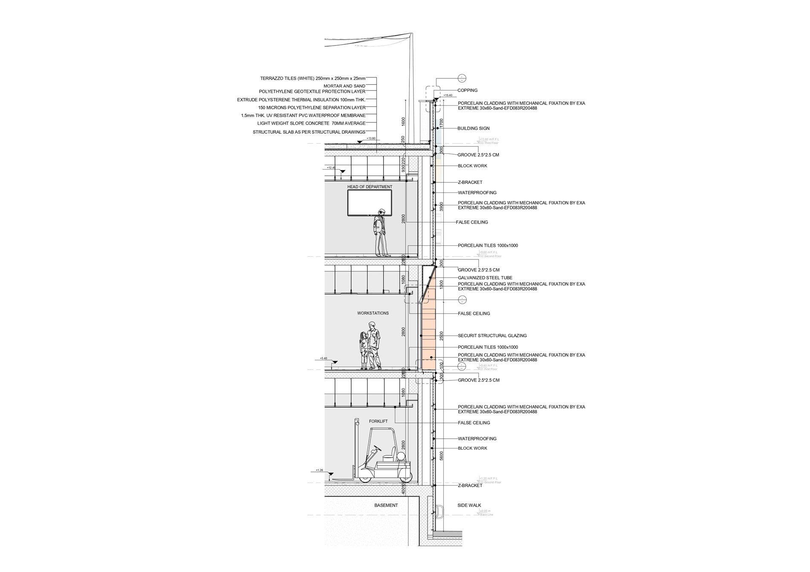

01 — Project Overview
Institutional healthcare BIM, delivered remotely.
Supply Chain is the working name for the Supply Administration Building & its Related Services — an institutional healthcare logistics facility for King Saud Medical City in Riyadh, Saudi Arabia, aligned with Saudi Vision 2030 Health Infrastructure targets. The drawings below are the real issued-for-tender set: elevations, floor plans and wall section detail. The scope covered full-cycle BIM modeling and bespoke facade design.
02 — The Challenge
Healthcare-grade precision, procurement-ready.
Institutional healthcare facilities carry tighter technical requirements than typical commercial or residential work, and this engagement needed seamless integration between the design model and the procurement process — with the added constraint of fully remote delivery.
03 — Design Approach
Facade design developed inside the BIM model.
The bespoke facade was developed as part of the coordinated BIM model rather than as a separate design exercise, keeping design intent and procurement data — quantities, specifications — aligned throughout.
04 — BIM Workflow
05 — Visual Development
The real issued-for-tender drawing set.
These are the project's own construction drawings — north and east elevations with material callouts, the ground-floor logistics plan (cold storage, quarantine and dispensing areas), the upper-floor office plan, and a fully annotated wall section detail.




06 — Technical Delivery
Design and procurement, integrated.
- Full elevation set with material callouts (porcelain cladding, structural glazing)
- Logistics-driven ground floor plan — cold storage, quarantine, loading/dispatch
- Fully annotated wall section detail, issued for tender
07 — Outcome
A tender-ready construction set.
Full-cycle BIM modeling and bespoke facade design were delivered for the institutional healthcare facility, ensuring seamless integration between design and procurement — carried through to a fully issued-for-tender drawing set.